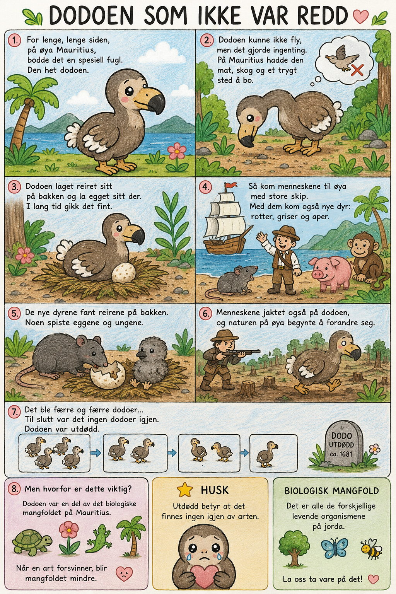

Naturfag · Engelsk
Dodoen
Et utdødd dyr – og hva det har med biologisk mangfold å gjøre.
Steg 1 av 5 · Les historien

For lenge, lenge siden, på øya Mauritius, bodde det en spesiell fugl. Den het dodoen.
Dodoen kunne ikke fly, men det gjorde ingenting. På Mauritius hadde den mat, skog og et trygt sted å bo.
Dodoen laget reiret sitt på bakken og la egget sitt der. I lang tid gikk det fint.
Så kom menneskene til øya med store skip. Med dem kom også nye dyr: rotter, griser og aper.
De nye dyrene fant reirene på bakken. Noen spiste eggene og ungene.
Menneskene jaktet også på dodoen, og naturen på øya begynte å forandre seg.
Det ble færre og færre dodoer... Til slutt var det ingen dodoer igjen. Dodoen var utdødd.
Dodoen var en del av det biologiske mangfoldet på Mauritius. Når en art forsvinner, blir mangfoldet mindre.
Steg 2 av 5 · Finn ordene
Hvilket ord passer? Si det høyt først, så trykk.
Dodoen var en ______.
Dodoen levde på ______.
I dag er dodoen ______.
Da dodoen forsvant, mistet vi en del av det ______.
Steg 3 av 5 · Forklar med egne ord
Ett ord om gangen. Prøv selv først – hjelpen er der hvis du trenger den.
Hva betyr «utdødd»?
Hva betyr «mangfold»?
Hva betyr «biologisk mangfold»?
Steg 4 av 5 · Detaljer og rekkefølge
Svar kort først – så som hel setning
Sett historien i riktig rekkefølge
Steg 5 av 5 · Mangfold og gjenfortelling
Se på forskjellen
Før🦤 🐢 🦎 🌴 🐦
Etter🐢 🦎 🌴 🐦
Er det mer eller mindre biologisk mangfold etter at dodoen forsvant?
Fortell hele historien
Uten å se på teksten: fortell historien om dodoen med dine egne ord. Bruk gjerne først – så – etterpå – til slutt.